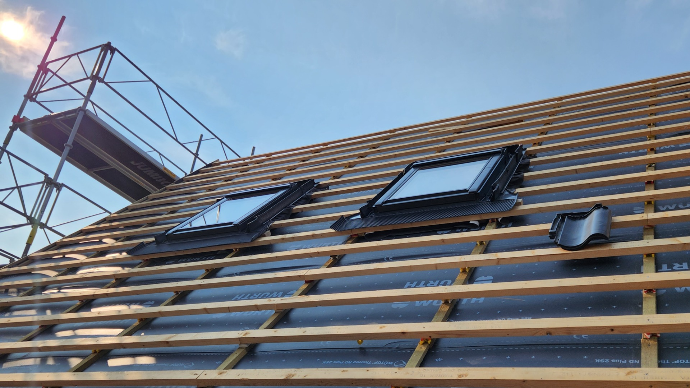
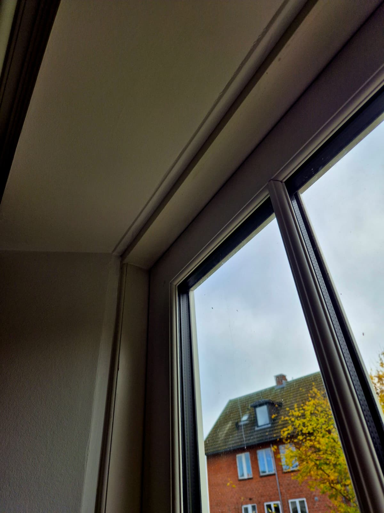
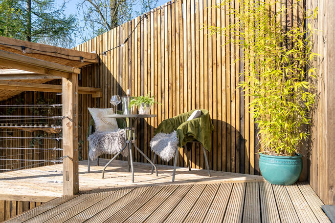
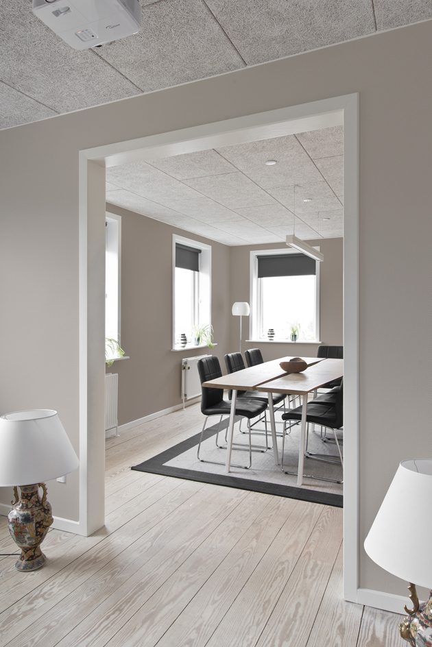
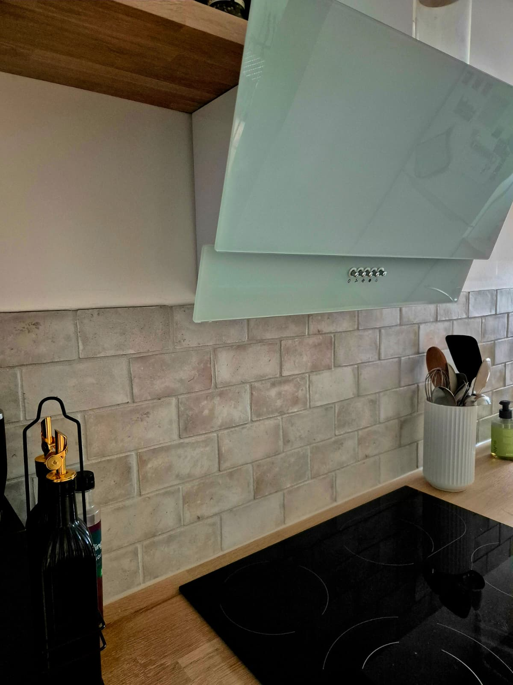
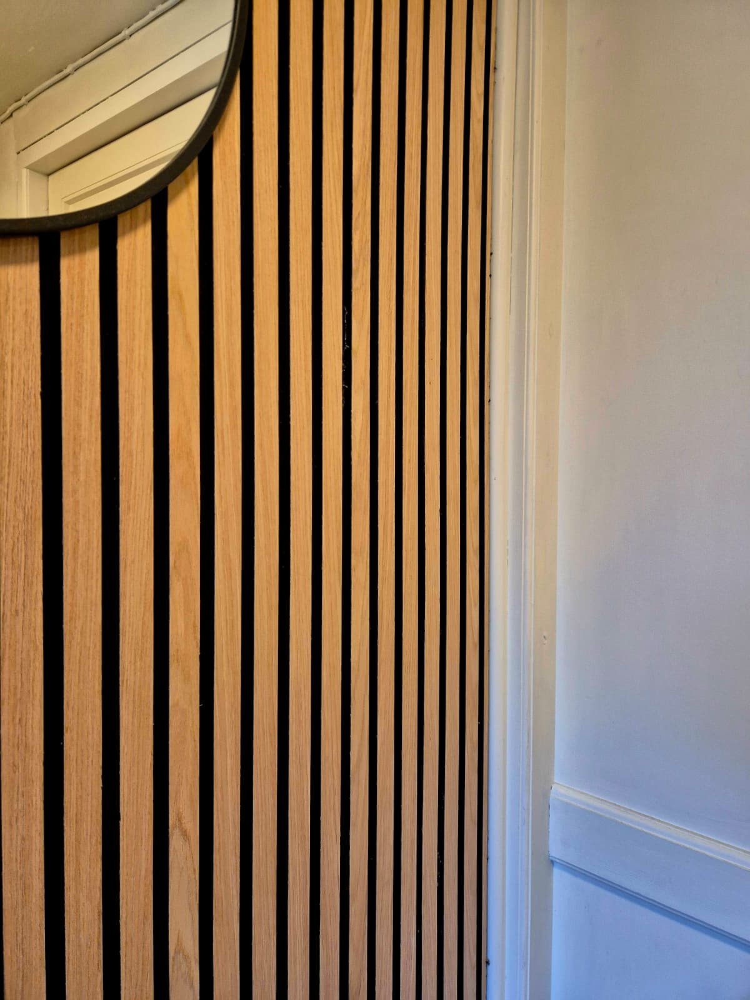
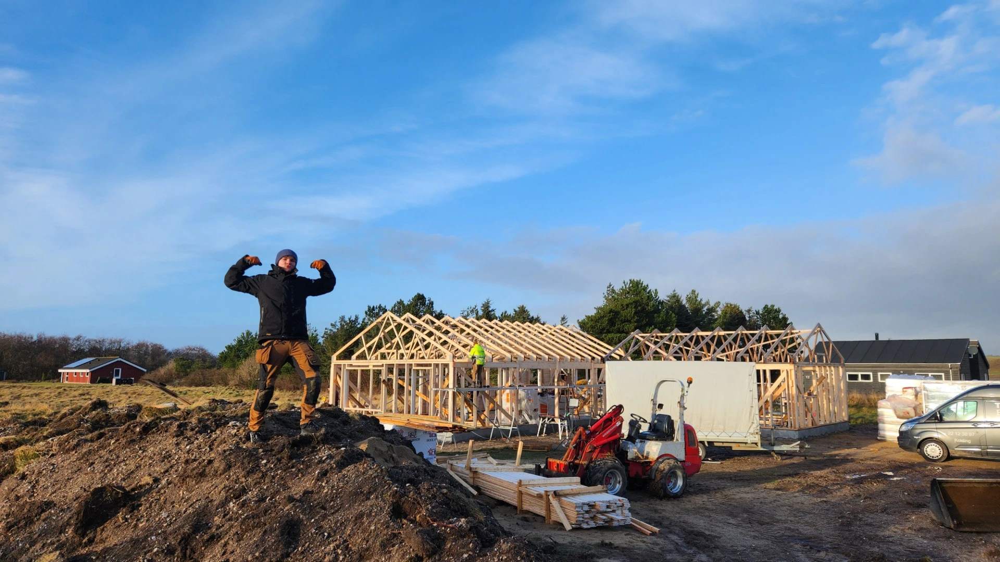

Fra groft tømrerarbejde til de fine detaljer. Vi specialiserer os i alt fra tilbygninger og udskiftning af tag til specialdesignede indretninger og eksklusive terrasser.
Som din lokale tømrer i Kolding leverer vi komplette løsninger, uanset om det drejer sig om reparation og vedligeholdelse eller store renoveringsprojekter.

Vi udfører alt fra groft tømrerarbejde til komplekse tilbygninger. Vi hjælper dig med udskiftning af døre og vinduer samt komplet udskiftning af tag.

Vi skaber skræddersyede løsninger til dit hjem. Fra specialdesignede indretninger til tømrerarbejde efter bestilling og professionel møbelsamling.

Vi er eksperter i både terrassekonstruktion og terrassereparation. Vi står for fremstilling og installation af hegn samt hurtig reparation.

Vi leverer professionel gulvlægning, reparation af gulve og komplet renovering af loft med en knivskarp finish.

Vi hjælper dig med komplet renovering af køkken og reparation af køkken- og badeværelsesinventar, hvor funktionalitet og æstetik mødes.

Vi tilbyder alt inden for reparation og vedligeholdelse, herunder reparation af trapper og detaljeorienteret tømrerarbejde.
Fra renovering af køkken til eksklusive udendørsarealer
Vi er stolte af vores TrustScore på 4,4 og de gode oplevelser vores kunder har med os.
"Vi har haft fornøjelsen af at have Johannes til at udskifte vores tag. Han har været velforberedt fra første møde til finish og har guidet os til den bedste løsning."
"Johannes har styret hele projektet med stor professionalisme og et imponerende overblik. Han har været ærlig, redelig og yderst pålidelig."
"Johannes er en virkelig dygtig håndværker med sans for detaljen. Han er punktlig og rydder op efter sig. Prisen og håndværket er helt i TOP!"
"Kanon service, kvalitet og samarbejde. Johannes går lige den ekstra mil for, at resultatet bliver vellykket. Det er ikke sidste gang, vi ringer efter ham."
"Johannes leverer et flot stykke arbejde. Han lytter tålmodigt til dine ønsker og leverer grundigt. Jeg elsker grundigheden i både store og små opgaver."
"Vi fik bygget et cykelskur. Super flot arbejde, og det blev hurtigt færdigt. Alt er lige som vi ønskede det. De bedste anbefalinger herfra!"

Baseret i Kolding - arbejder i hele landet
Hos Tømrermester Johannes Eriksen lægger vi stor vægt på kvalitet og ærlighed. Vi har mange års erfaring i branchen og specialiserer os i alt fra renovering og reparation og vedligeholdelse til større byggeprojekter.
Uanset om du har brug for reparation af trapper eller en komplet ombygning af boligen, arbejder vi effektivt, rent og professionelt. Vores mål er altid at levere et detaljeorienteret håndværk, vi selv kan være stolte af.
Kontakt os for rådgivning